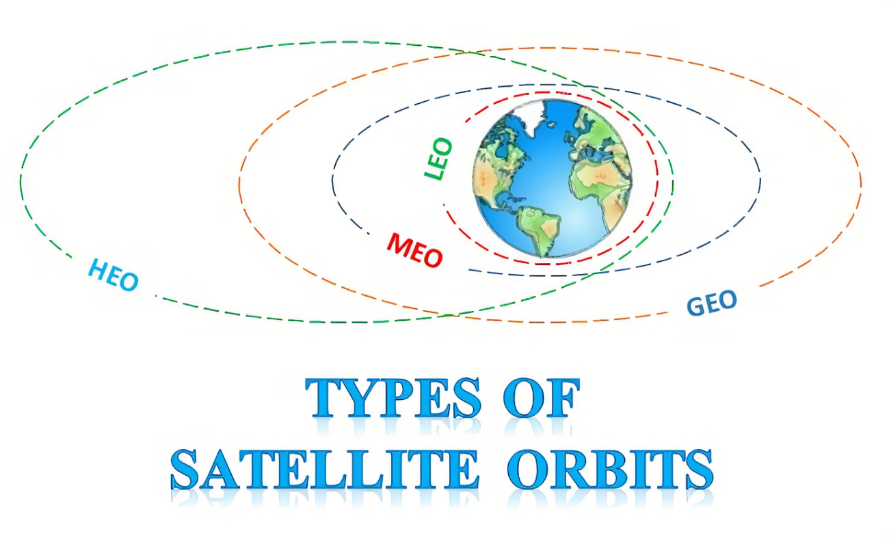
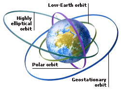

 A low Earth orbit (LEO) is an Earth-centered orbit near the planet, often specified ashaving an orbital period of 128 minutes or less (making at least 11.25 orbits per day) and an eccentricity less than 0.25.[1] Most of the artificial objects in outer space are in LEO, with an altitude never more than about one-third of the radius of Earth.